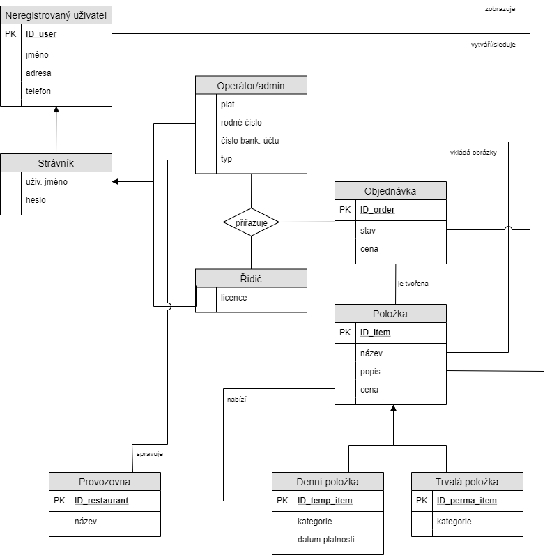

- Autoři
- Bořek Reich
xreich06@stud.fit.vutbr.cz -
Zobrazení: jídel, provozoven, objednávek; práce s objednávkou; přihlášení a šifrování hesel; integritní omezení
- Martin Chládek
xchlad16@stud.fit.vutbr.cz -
Vytvoření databáze a tabulek; správa: profilů, provozoven, uživatelů; registrace; grafické rozhraní a kaskádové styly
- František Mrázek
xmraze14@stud.fit.vutbr.cz -
Integritní omezení; úprava databáze; vyhledání náhledů; technická zpráva; dokumentace
- URL aplikace
- http://www.stud.fit.vutbr.cz/~xreich06/
- http://www.stud.fit.vutbr.cz/~xreich06/create_tables.php - Vytvoření tabulek a naplnění daty
Uživatelé systému pro testování
| Login | Heslo | Role |
|---|
| xmrazek | heslo | Administrátor / Operátor |
| xnamraza | heslo | Operátor |
| xchlup | heslo | Řidič |
| zigi | heslo | Strávník |
Implementace
Celý projekt je rozdělen do několika souborů. Každý soubor obsahuje část logického celku. Základem je soubor index.php. Ten se spouští jako první a skrz něj se poté odkazuje na další stránky/ soubory. Tímto způsobem je zajištěno oddělení logických celků stránky jak po uživatelské, tak po programátorské stránce. Například:
Databáze

Instalace
Požadavky
- php verze 7.2
- MySQL v5.5 server
- Vyplnění/změna identifikačních údajů v "connection_credentials.php"
- Bežný prohlížeč, např. Google Chrome
Postup instalace na server
- Nahrát všechny soubory na databázový server např. Eva
- Pozměnit údaje v connection_credentials.php
Inicializace databáze
Před prvním spuštěním je potřeba nejdříve:
- Vytvořit tabulky a vložit do databáze záznamy spuštěním create_tables.php
Spuštění
- http://www.stud.fit.vutbr.cz/~login/index.php